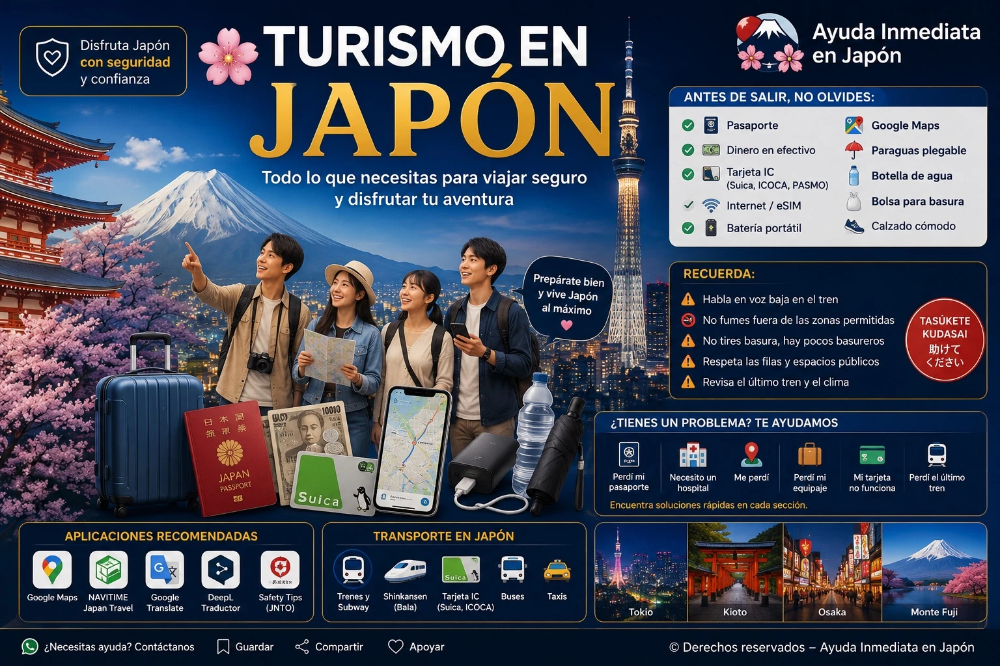

Lugares recomendados, videos turísticos y consejos prácticos para disfrutar Japón con más confianza.

El turismo en Japón no es solo visitar lugares bonitos. También significa conocer su cultura, respetar sus costumbres y disfrutar cada lugar con educación, seguridad y consideración hacia las personas que viven aquí.
Los templos y santuarios son lugares turísticos, pero también son espacios de respeto espiritual y cultural. Muchas personas van allí a orar o a participar en tradiciones. Camina con calma, evita gritar, respeta las señales y no entres en zonas prohibidas.
Gracias
ありがとうございます
Arigatō gozaimasu
Disculpe
すみません
Sumimasen
¿Dónde está la estación?
駅はどこですか？
Eki wa doko desu ka?
¿Cuánto cuesta?
いくらですか？
Ikura desu ka?
No entiendo japonés
日本語がわかりません
Nihongo ga wakarimasen
Ayuda, por favor
助けてください
Tasukete kudasai
Explora algunos de los destinos más populares de Japón. Abre cada sección para ver un video y conocer mejor el ambiente de cada lugar.
Tokio combina rascacielos, trenes, luces, tecnología, compras y barrios famosos como Shibuya, Shinjuku y Asakusa.
Kioto es ideal para ver templos, santuarios, calles antiguas, jardines japoneses y paisajes tradicionales.
Osaka es famosa por su comida callejera, Dotonbori, ambiente alegre y buena conexión con Kioto, Nara y Kobe.
El Monte Fuji es uno de los símbolos más importantes de Japón. Es ideal para fotos, excursiones y paisajes naturales.
Antes de salir, revisa el clima, el horario del último tren, lleva batería en el teléfono y guarda la dirección de tu hotel en japonés.